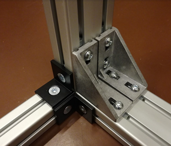
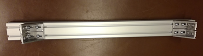
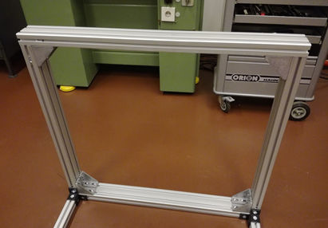
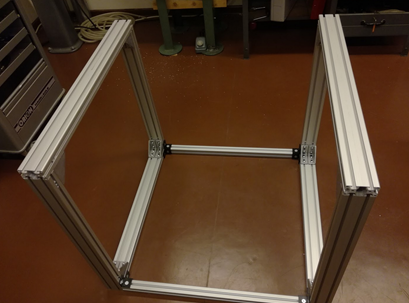
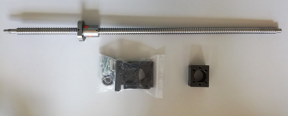
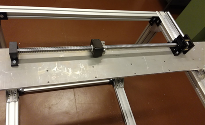
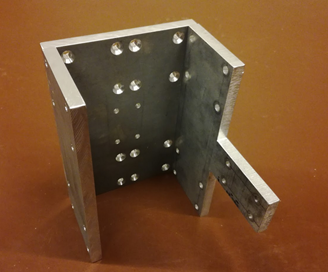
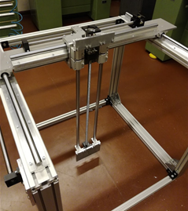
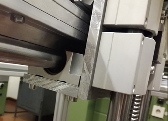

COSI-Measure v1.0
Mechanical Assembly
Revision History
| Rev. | Date (YYYY-MM-DD) | Description of Change | Author/Contributors |
|---|---|---|---|
| 1.0 | 2017-08-29 | Initial version | Haopeng Han, Lukas Winter |
| 1.1 | 2018-08-24 | Revised version | Lukas Winter |
Notes
Please find below the documentation to assemble the mechanical components of COSI Measure, a 3D multipurpose measurement system [1]. If you find any flaws or have any questions/suggestions regarding this document or project, please let us know at lukas.winter@ptb.de. Improving the quality of this work and its documentation makes it easier for others to reproduce and build upon this work.
Documentation published describing Hardware is licensed under the CERN OHL v.1.2. You may redistribute and modify this documentation under the terms of the CERN OHL v.1.2. (http://ohwr.org/cernohl) unless otherwise stated.
This documentation is distributed WITHOUT ANY EXPRESS OR IMPLIED WARRANTY, INCLUDING OF MERCHANTABILITY, SATISFACTORY QUALITY AND FITNESS FOR A PARTICULAR PURPOSE. Please see the CERN OHL v.1.2 for applicable conditions.
If you find COSI Measure useful in your work, please cite this paper:
[1] Han H, Moritz R, Oberacker E, Waiczies H, Niendorf T, and Winter L, "Open Source 3D Multipurpose Measurement System with Submillimetre Fidelity and First Application in Magnetic Resonance," Scientific Reports, 7:13452, 2017.
Required Tools:
- Socket screw keys for M5, M6, M8
Parts
- 5 Aluminum frame (40x40x800)mm³
- 10 Aluminum frame (40x80x800)mm³
- 2 Aluminum frame (40x80x880)mm³
- 5 Aluminum plate 1
- 2 Aluminum plate 2
- 2 Aluminum plate 3
- 2 Aluminum plate 4
- 3 Aluminum plate 5
- 3 Aluminum plate 6
- 1 Aluminum plate 7
- 2 Aluminum plates 8 & 9
- 12 Angles, 40
- 12 Angles, 40x80
- 2 Ballscrew & spindle nut block
- 5 Distance plate 1mm
- 2 Easy-Mechatronics System
- 2 Floating bearing
- 12 Hexagon nuts, M5
- 16 Linear bearing, TBR20UU
- 12 M5x20 countersunk screws
- 24 M5x20 screws
- 24 M5x30 screws
- 2 M6 screw nuts
- 32 M6x20 countersunk screws
- 18 M6x20 screws
- 2 M6x30 screws
- 24 M8x18 countersunk screws
- 64 M8x18 screws
- 10 M8x20 countersunk screws
- 2 Motor coupler
- 2 Motor holder and fixed bearing
- 24 Slot nuts, M5
- 52 Slot nuts, M8
- 4 Supported rail, TBS20
Step 1: Assemble the aluminum frames
Insert Slot Nuts into Frames:
- Take 2 x Aluminum frame (40x80x800)mm³ and insert 4 x Slot nuts, M8 at each end of the frames.
Figure 3: Inserting slot nuts at each end of the frame.
- Add an additional Slot nuts, M8 in the perpendicular slot of each frame.
Figure 4: Adding an additional slot nut in the perpendicular slot of the frame.
Attach Angles to Frames:
- Fix the Angles, 40x80 to these two aluminum frames using M8x18 screws.
Prepare Remaining Frames:
- Insert Slot nuts, M8 at the top end of each of the remaining four Aluminum frame (40x80x800)mm³.
Figure 5: Inserting slot nuts at the top of the remaining frames.
Assemble the Frame Structure:
- Attach the remaining frames to the angles using M8x18 screws.
Figure 6: Frame structure assembled after attaching remaining frames to angles.
Step 2: Connect the 40x40 aluminum frames
Figure 7: Diagram for Step 2.
Insert Slot Nuts into 40x40 Frames:
- Insert Slot nuts, M8 on each side of each Aluminum frame (40x40x800)mm³.
Figure 8: Inserting slot nuts into the aluminum frame.
Prepare Vertical Frames:
- Insert a Slot nuts, M8 at each corner into the vertical Aluminum frame (40x80x800)mm³ from Step 1. (See Figure 7)
Attach 40x40 Frames to Structure:
- Screw the two Aluminum frame (40x40x800)mm³ to the structure using the Angles, 40 and M8x18 countersunk screws.

Figure 9: Attaching the 40x40 frames to the structure using angles.
Step 3: Prepare for the top frame assembly
Insert Slot Nuts into Standing Structure:
- Insert Slot nuts, M8 at the top of two frames of the standing structure.

Figure 10: Inserting 5 slot nuts at the top of the frame.
Figure 12: Slot nuts inserted at the top of the standing structure.
- Insert Slot nuts, M8 at the top of the remaining two frames.
Figure 11: Inserting 4 slot nuts at the top of the frame.
Note:
- These slot nuts will be used to attach angles later on.
Step 4: Attach the aluminum frames to the top of the structure
Insert Slot Nuts into Top Frames:
- Insert Slot nuts, M8 at one end and Slot nuts, M8 at the other end of each Aluminum frame (40x80x880)mm³.
Attach Angles to Top Frames:
- Attach the Angles, 40x80 to these aluminum frames using M8x18 screws.

Figure 13: Attaching angles to the aluminum frames.
Assemble Top Frame Structure:
- Position the 880mm aluminum frames on top of the standing structure and connect the angles.

Figure 14: Positioning the 880mm frames on top of the structure.

Figure 15: Connecting the angles to the standing structure.
- Note: There are two slot nuts on the left side (not on right). These will be used in the next step to connect the remaining aluminum frame (40x40).
Step 5: Add the final aluminum frame
Insert Slot Nuts into Frame:
- Insert Slot nuts, M8 at each end of the Aluminum frame (40x40x800)mm³. (Same as in Step 2)
Attach Angles and Connect Frame:
- Attach the Angles, 40 to the aluminum frame using M8x18 countersunk screws.
- Connect the frame to the existing structure.
Figure 16: Connecting the final 40x40 aluminum frame to the structure.
Step 6: Attach aluminum plates to the frame
Insert Slot Nuts into Frames:
- Insert Slot nuts, M8 into the horizontal (x-axis) aluminum frame on top:
- Slot nuts, M8 on the left
- Slot nuts, M8 on the right
- Insert Slot nuts, M8 into the vertical (y-axis) aluminum frames:
- Slot nuts, M8 on the left
- Slot nuts, M8 on the right
- Tip: You can insert them through the bottom and slide them to the top corner.
Figure 17: Inserting slot nuts into the horizontal frame.
Figure 18: Slot nuts inserted into the frames.
Attach Aluminum Plates:
- Attach Aluminum plate 3 to the left corner and Aluminum plate 4 to the right corner using M8x20 countersunk screws.
Step 7: Install the linear bearings and rails
Insert Slot Nuts into Top Frames:
- Insert Slot nuts, M5 on the top two (x-axis) 40x80 frames. (2 frames × 2 rails × 6 slot nuts per rail = 24 slot nuts)
Figure 19: Inserting slot nuts on the top frames for the rails.
Attach Supporting Rails:
- Attach the Supported rail, TBS20 to the slot nuts using M5x20 screws.
- Important: Do not tighten the screws yet.
Install Linear Bearings:
- Slide the Linear bearing, TBR20UU onto the supporting rails.
Figure 20: Sliding linear bearings onto the supporting rails.
Step 8: Attach the motor and spindle system
Attach Motor Blocks:
- Attach the Motor holder and fixed bearing to the Ballscrew & spindle nut block.

Figure 21: Attaching the motor block to the spindle nut block.
Assemble Components:
- Assemble all parts with the Floating bearing and Motor coupler as shown below.
Figure 22: Assembling the ballscrew, bearings, and motor holder.
Figure 23: Completed assembly of motor and spindle system.
Step 9: Install the Easy-Mechatronics System
Assemble Mechatronics System:
- Attach the Easy-Mechatronics System (z-axis) to Aluminum plates 8 & 9 using M6x20 screws.

Figure 24: Assembled bearings of the Easy-Mechatronics system with aluminum plates 8 & 9.
- Note: The motor holder is attached to plate 8.
Step 10: Connect the linear axis
Attach Plate 1 to Linear Bearings:
- Attach Aluminum plate 1 to the four Linear bearing, TBR20UU from Step 7.

Figure 25: Attaching plate 1 to the linear bearings.
Attach Linear Axes:
- Attach one assembled linear axis (y-axis) to Aluminum plate 1.
Connect Second Linear Axis:
- Attach the second linear axis to Aluminum plate 3 (using M6x20 screws, floating bearing) and Aluminum plate 4 (using M6x30 screws and M6 screw nuts, motor holder).
Step 11: Install the z-axis linear bearings
Connect Plates 5 and 6:
- Connect Aluminum plate 5 with Aluminum plate 6 using M5x30 screws.
Connect Plates 6 and 7:
- Connect Aluminum plate 6 with Aluminum plate 7 using M5x30 screws.

Figure 27: Assembled plates 5, 6, and 7.
Attach Plates to Linear Bearings:
- Attach plates 5, 6, and 7 to the linear bearings from the Easy-Mechatronics System (z-axis) using M6x20 countersunk screws.
- Note: Ensure that the linear bearings are positioned as in (pointing away from plates 8 & 9). Aluminum plate 5 should point towards the motor holding block.
Figure 28: Attaching plates 5, 6, and 7 to the linear bearings.
Fix Plate 6 to Ballscrew Block:
- Fix Aluminum plate 6 to the ballscrew block using M5x20 countersunk screws.
Step 12: Complete the assembly by attaching supporting rails
Install Linear Bearings on Rails:
- Slide Linear bearing, TBR20UU onto the Supported rail, TBS20 (2 bearings on top, 2 on bottom).
Attach Rails to Plate 1:
- Place one supporting rail on top of Aluminum plate 1 and insert all M5x30 screws through the holes.
- Place the other supporting rail at the bottom of Aluminum plate 1, aligning the screws through the holes.
- Fix the rails with the Hexagon nuts, M5.
Figure 29: Attaching supporting rails to plate 1.
Step 13: Final z-axis assembly
Attach Z-Axis to Bearings:
- Attach the assembled z-axis to the Linear bearing, TBR20UU from Step 12 using M6x20 countersunk screws.

Figure 30: Attaching the z-axis to the linear bearings.
- Tips:
- You may need to loosen the screws connecting plates 5, 6, and 7 slightly if the fit is too tight. Retighten after assembly.
- Start with the top two bearings, then attach the bottom ones.
- If there is excess space, use Distance plate 1mm between the linear bearings and Aluminum plates 5 and 7.

Figure 31: Using distance plates between linear bearings and plates if necessary.
Fix Plate 5 to Ballscrew Block:
- Fix Aluminum plate 5 to the ballscrew block of the y-axis using M5x20 countersunk screws.
Figure 32: Fixing plate 5 to the ballscrew block of the y-axis.
Step 14: Attach the final aluminum plate
Attach Plate 2 to Plate 1:
- Attach Aluminum plate 2 to Aluminum plate 1 using M5x30 screws.
Fix Plate 2 to Ballscrew Block:
- Attach Aluminum plate 2 to the ballscrew block from the x-axis using M5x20 countersunk screws. Optionally, include a Distance plate 1mm at the ballscrew block.
Figure 33: Attaching plate 2 to plate 1 and fixing to the ballscrew block.
The assembled configuration should look like this:
Figure 34: Final assembled configuration of COSI Measure.
Comments
We are collecting a list of issues and improvements. If you found any errors in the documentation, have ideas/suggestions for improvements, or if you made some modifications, please let us know (you can edit this document with the tracking function and send it to us).
Known Issues
- The cable chain holder on the z-axis needs some redesign. The current version needs to be manually adjusted.
Improvements
- Limit switch holder files exist in Sketchup only; an adaptation to FreeCAD is desirable.
- The y-axis motor could be rotated 180°, which would make cabling easier later on.